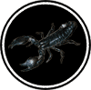

|

|
>> Содержание / Список кланов /
  NBS NBS
На поле боя воцарилась тишина, и сумрак медленно начал захватывать владения дневного света. В воцарившейся тиши слышны были лишь чьи-то редкие стоны и звон капель дождя, разбивающихся в мелкие брызги о крепкие доспехи. Красные от ненависти глаза молодого Бойца улавливали торжествующие лица врагов. Он стоял, обессиленный, на одном колене, опираясь на алый от чужой крови меч, и из-под бровей гневно взирал на своих извечных недругов. Среди лишенных жизни врагов на поле битвы лежали тела друзей. Все те, кто был близок Ему, Его народ – друзья, соратники, родные – проиграли эту решающую битву и пали под смертоносными ударами ненавистного захватчика. Тонкие струйки крови торопливо стекали по лицу Воина, и исчезали, смываемые дождем. Он не мог встать. Боль и горечь были настолько сильны, что Он с усилием удерживал себя на коленях... Теперь Его любимые земли, любимый солнечный край больше не принадлежат Его народу. Но Он был еще жив, и Он не мог остановить свое сражение, пока душа хотя бы теплилась в ослабевшем теле.
Два огромных воина в расцарапанных доспехах и с улыбками на лицах медленно шли в сторону последнего Защитника. Их злобные глаза заметили силуэт человека, и оба с криками бросились к нему, занеся над головами дубины.
Первый из них, едва приблизившись, был сражен в тот же миг, и с грохотом упал на влажную землю. Второй же подлым ударом заставил Бойца бесчувственно пасть навзничь рядом с только что поверженным врагом.
Мрак окутал поле боя. Боец лежал без чувств, с обращенным к небу лицом, и Его сердце, замедляя биение, уже готово было остановиться. Он не мог чувствовать, как по окровавленной груди медленно прополз черный скорпион. Раздался ужасающий раскат грома, и глаза Бойца резко распахнулись в кромешной мгле. Никто из живых иль мертвых не узнал бы взгляда этих глаз, теперь полностью залитых кровью, лишенных зрачков, сияющих мстительными огнями. Воин неторопливо встал и с гордым презрением глянул на толпу врагов, что приближалась к Нему. Он поднял меч лишь в тот миг, когда противники были уже близко. Его удары были мощными, размеренными, Он был настолько ловок, что ни один воин не мог противостоять Ему. Спустя несколько минут тела поверженных врагов лежали, распластанные, у Его ног.
Он поднял взгляд к темным тучам, из которых искрами с удивительной скоростью летели мелкие капли, и отстегнул доспех. Вспышка молнии на мгновение осветила изображение черного скорпиона с угрожающе поднятым для атаки хвостом на Его мощной груди. Вокруг поднимались Его друзья, Его соратники, и грудь каждого из восставших была отмечена чернеющим знаком Скорпиона. Их ждали дни, наполненные хладнокровными битвами и сражениями. На лезвиях своих клинков они несли смерть и проклятие захватчикам родного края, в пылающих сердцах – свободу своей земле. Но ничто не могло вернуть им прежний облик. Отверженные солнечным светом, они заменили ночью свой день.
Им не было равных, они сметали в прах врагов, пытавшихся посягнуть на их братство. С наступлением ночи их глаза превращались в пылающие огни, а сила их возрастала в несколько раз. Объединенные общей тайной, они стали семьей, и никто и ничто не мог разрушить их узы, крепче которых не было в целом мире. Легендарный Воин был избран Главою, и управлял достойно и решительно, а помогал Ему в этом Совет Братства. Тот же, кто смел ослушаться воли Совета и отринуть законы, с позором изгонялся из братства – лишенный таинственным образом знака на груди, он был обречен на бесконечные странствия в угрюмом одиночестве. Исчезновение черного силуэта скорпиона означало лишь одно – предательство. Загадочные Темные Силы неотступно следовали и защищали Братство, и если и пришлось бы сгинуть ему однажды, то лишь в наполненной Тьмой бездне, по воле самой Тьмы...
И имя этому братству Night Black Scorpions.
Официальный сайт клана: http://nbscorpions.clan.su
|
 |
|